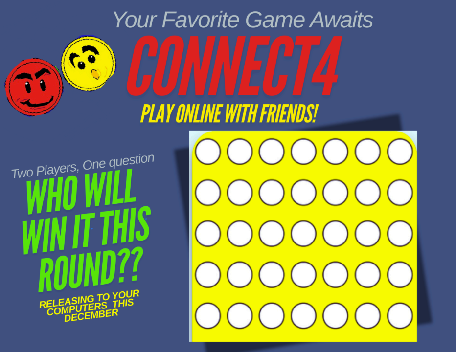
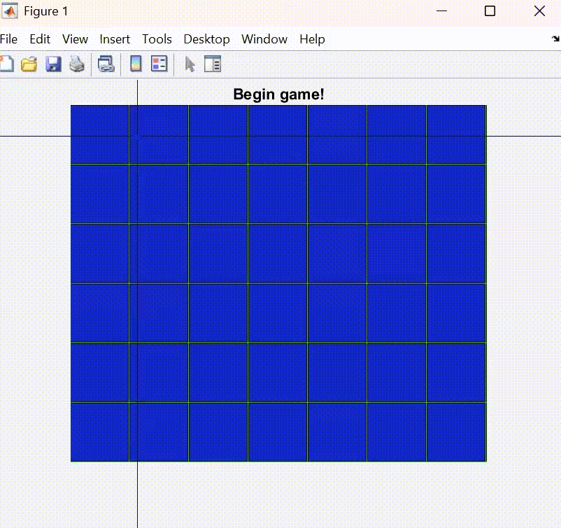
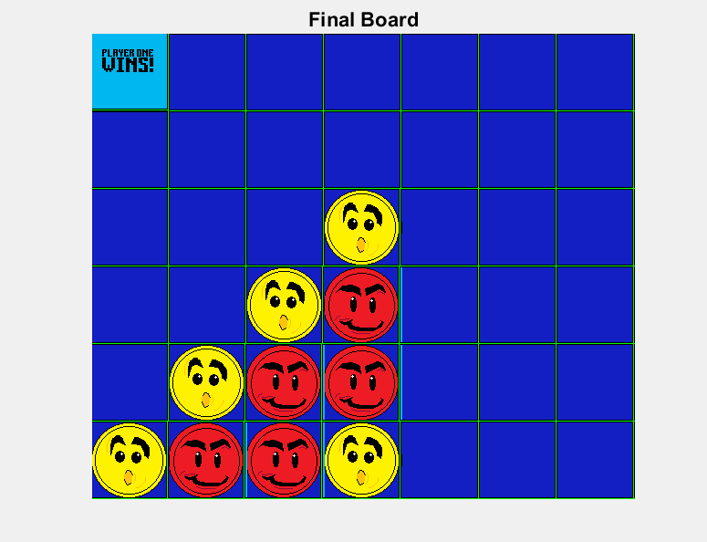
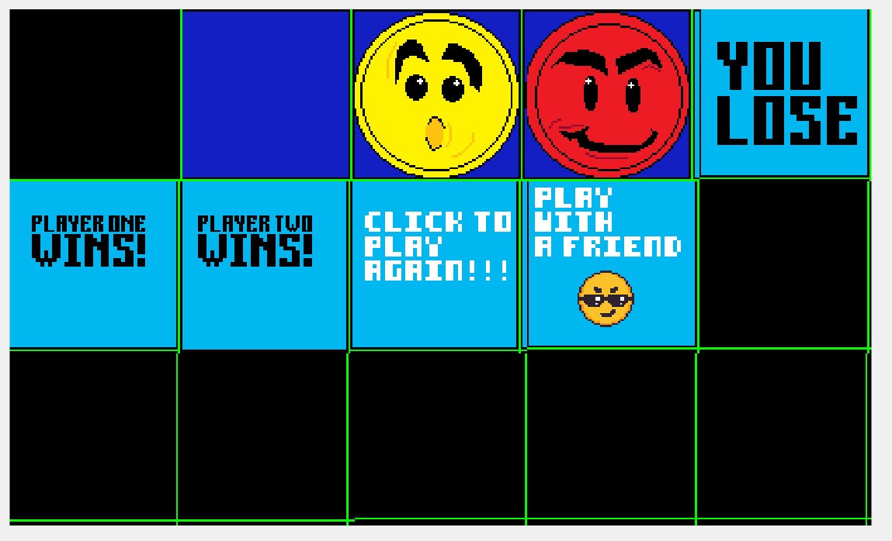

ENGR 1181 Software Design Project
Connect Four Game

Overview
Worked in a small team to develop a two-player Connect Four game in MATLAB using the Simple Game Engine library. The project features a graphical game board, custom-designed sprites, mouse-controlled piece placement, turn-based gameplay, and automatic win detection for horizontal, vertical, and diagonal connection patterns.
How it works
Players take turns clicking a column to drop their game piece onto the board. The program determines the lowest available position in the selected column, updates the display, and checks for winning combinations after every move. A custom win-checking function scans the board for four matching pieces in a row horizontally, vertically, and diagonally. Once a player wins, the game displays the result and allows users to start a new match.

What I learned
This project strengthened my MATLAB programming skills by introducing graphical game development and algorithm design. I gained experience implementing game logic, creating custom visual assets, testing, and collaborating with a team to build a game from concept to completion.

